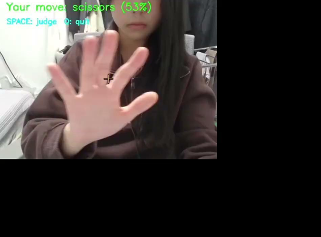
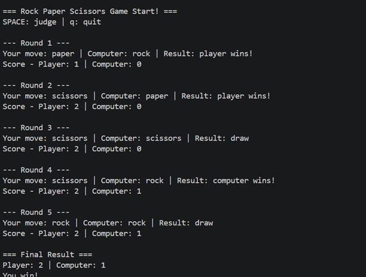

AI Hand Gesture Rock–Paper–Scissors
Author: Kim Jiwon (20260957)
KENTECH | School of Energy Engineering
1. Motivation & Problem Definition
This project was developed to explore how Artificial Intelligence and Computer Vision can recognize human hand gestures in real time. The main objective was to design a system that automatically classifies hand gestures (Rock, Paper, Scissors) through webcam input and enables interactive gameplay between a human player and a computer. This project also aimed to understand the relationship between data collection, AI model training, prediction, and real-time interaction systems.
2. Methodology
Computer Vision
OpenCV was used to capture webcam images and detect user hand gestures in real time. The system continuously receives image frames and processes them for prediction.
Deep Learning Model
A Keras-based classification model was trained to recognize three hand gestures: rock, paper, and scissors. The model predicts user movement with probability values in real time.
Game Logic
The predicted hand gesture is compared against a computer-generated move, and the game result is determined through Rock–Paper–Scissors rules.
3. Experiment & Visual Results

Concept Illustration
Illustration representing interaction between humans and AI systems through gesture recognition.

Real-Time Experiment
The webcam system predicts hand gestures during live gameplay using AI inference. Real-time classification probabilities are displayed to the user.

Game Output Result
The system compares player gestures with computer choices and automatically calculates match results.
4. Results & Discussion
- Successfully integrated Computer Vision (OpenCV) and Deep Learning (Keras) for real-time gesture recognition.
- Achieved approximately 83% classification accuracy under normal conditions.
- Observed limitations in prediction accuracy depending on lighting conditions and background complexity.
- Demonstrated how AI models can be connected to interactive applications.
5. Future Applications
This project can be expanded toward touchless interaction systems, educational AI tools, robot-human interaction, and gesture-based interfaces. Future improvements may include:
- Audio feedback integration
- Multi-player interaction systems
- Higher-accuracy AI models
- Advanced object detection systems (YOLO)
6. Conclusion
This project provided practical experience in combining programming, data, computer vision, and artificial intelligence. It demonstrated how AI models can move beyond theoretical concepts and be applied to interactive real-world systems.
← Back to Home